Dan Čermák
who -uDan Čermák
| Open Source Advocate @SUSE | |
| i3 SIG, Package maintainer | |
| Developer Tools, Testing and Documentation, Home Automation | |
| https://dancermak.name | |
| dcermak | |
| @Defolos@mastodon.social | |
| @defolos.bsky.social |
rsync -avz --exclude=/app/ / /app/
tar -czf app.tar.gz /app
and deploy:
tar -xzf app.tar.gz -C /opt/
chroot /opt/app/ /usr/local/bin/.bin
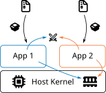
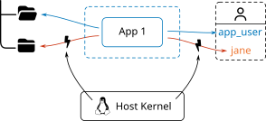
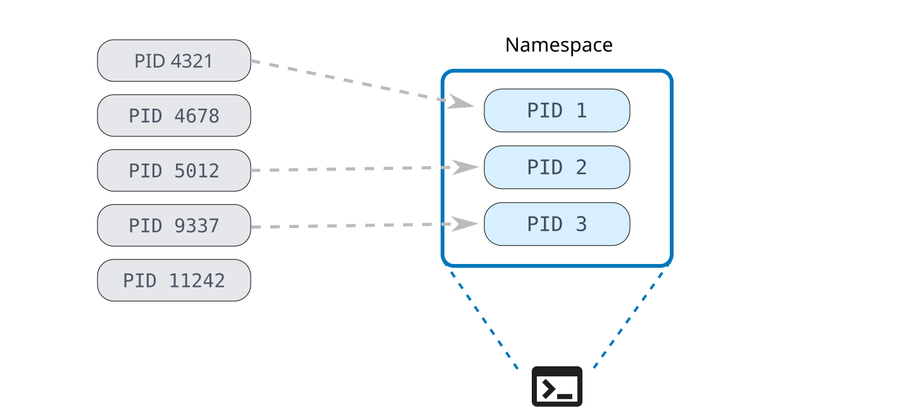
provide kernel-level resource isolation
Available Namespaces:
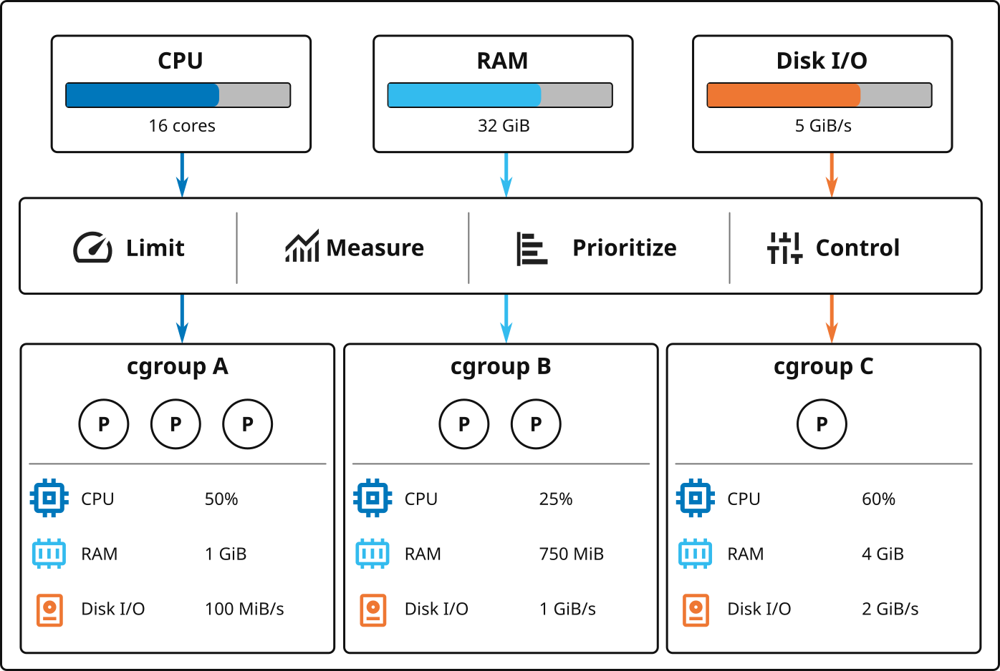
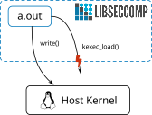
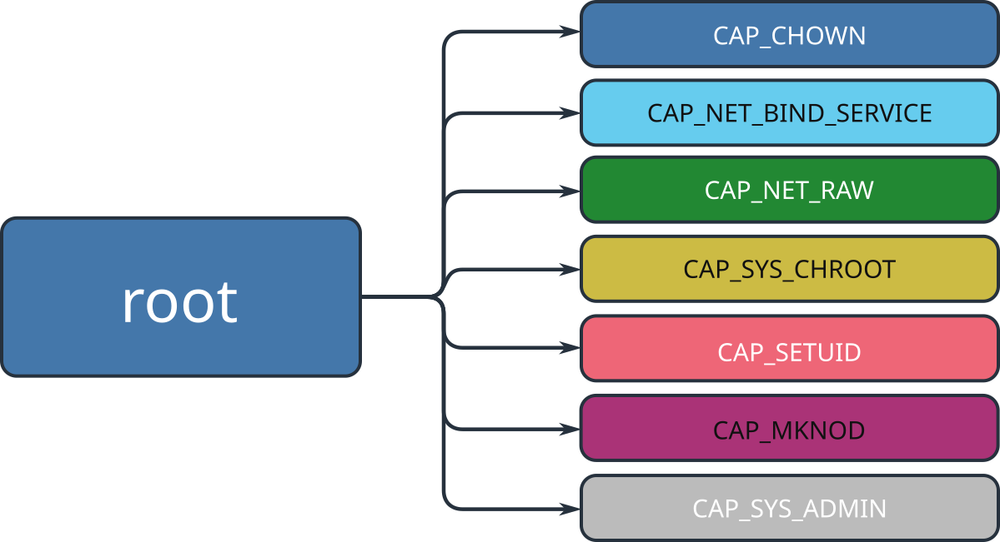
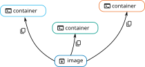
mount -t overlay overlay \
-o lowerdir=lower,\
upperdir=upper,workdir=/work/ \
merged
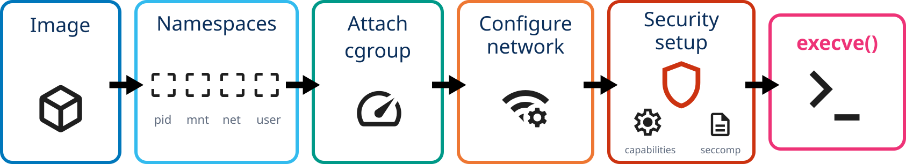
| Have | Missing |
|---|---|
| folder_supervised filesystem isolation | build_circle standardized container build process |
| safety_divider process isolation | share simple sharing & distribution |
| memory resource limits | terminal convenient launch & setup tool |
| security security hardening |
Dockerfiledocker CLIFROM registry.opensuse.org/opensuse/tumbleweed
RUN zypper -n in python3
COPY . /src/
RUN pip install .
RUN make test
and we need some CoW
docker build .
FROM registry.opensuse.org/opensuse/tumbleweed
COPY . /src/
WORKDIR /src/
RUN zypper -n in python3-pip; \
pip install . ; \
zypper -n rm --clean-deps gcc; zypper -n clean; \
rm -rf {/target,}/var/log/{alternatives.log,lastlog,tallylog,zypper.log,zypp/history,YaST2}
EXPOSE 80
CMD ["/usr/bin/python", "-m", "my-app"]
FROM registry.opensuse.org/opensuse/tumbleweed
COPY ./project/ /src/
ENV USER="geeko"
RUN zypper -n in openssh-clients; \
ssh-keygen -t ed25519 -f /root/.ssh/id_ed25519 -N ""; \
zypper -n rm --clean-deps openssh-clients; \
zypper -n clean; rm -rf /var/log/lastlog;
VOLUME ["/src/data"]
WORKDIR /src/
EXPOSE 22
RUN useradd $USER
USER $USER
CMD ["echo hello"]
ENTRYPOINT ["/bin/bash", "-ce"]
docker pull registry.opensuse.org/opensuse/leap
docker pull registry.opensuse.org/opensuse/leap:16.0
docker pull registry.opensuse.org/opensuse/leap:16.0sha256:cd9aac11608afabc96a10074619cf2a65ccf60ff4b72d09d4e4e125af409035d
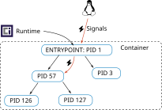
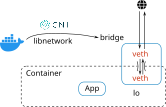
RUN zypper -n in python3-pip; \
pip install . ; \
zypper -n rm --clean-deps gcc; zypper -n clean; \
rm -rf {/target,}/var/log/{alternatives.log,lastlog,tallylog,zypper.log,zypp/history,YaST2}
$ podman run -e POSTGRES_PORT=1234 \
-e POSTGRES_USER=pg \
my-app
$ podman run my-app bash
#
or:
$ podman run my-app
#
Volumes are your friend:
VOLUME ["/var/db/"]
# /var/db/ is now erased after each step!
use the exec-form:
ENTRYPOINT ["/usr/bin/my-app", "-param", "value"]
Actually Docker
Podman
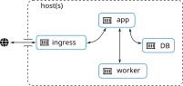
services:
app:
build: .
ports:
- "8080:8080"
volumes:
- .:/src
depends_on:
db:
condition: service_healthy
db:
image: registry.opensuse.org/opensuse/mariadb
environment:
- MARIADB_ALLOW_EMPTY_ROOT_PASSWORD=1
docker compose up
podman generate systemd[Unit]
Description=TW container
[Container]
Image=registry.opensuse.org/opensuse/tumbleweed
# volume and network defined below in other configs
Volume=test.volume:/data
Network=test.network
Exec=sleep infinity
[Service]
Restart=always
TimeoutStartSec=900
[Install]
# Start by default on boot
WantedBy=multi-user.target default.target
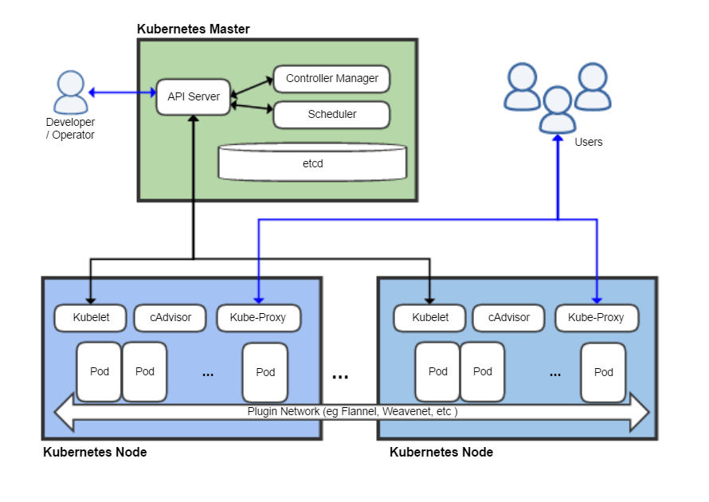
apiVersion: apps/v1
kind: Deployment
metadata:
name: web-application
labels:
app: web
spec:
replicas: 3
selector:
matchLabels:
app: web
template:
metadata:
labels:
app: web
spec:
containers:
- name: web-container
image: nginx:latest
ports:
- containerPort: 80
resources:
limits:
cpu: "0.5"
memory: "512Mi"
requests:
cpu: "0.2"
memory: "256Mi"
livenessProbe:
httpGet:
path: /
port: 80
initialDelaySeconds: 30
periodSeconds: 10
readinessProbe:
httpGet:
path: /
port: 80
initialDelaySeconds: 5
periodSeconds: 5
It depends
Ask yourself: